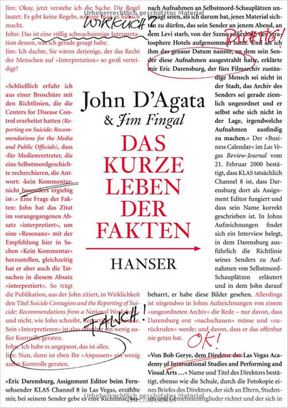

Hello, I'm Jim. I'm a cofounder of Logic Magazine. I co-wrote a strange book with lots of red text in it. So far it's been published in three languages. I am currently the CTO at Amino, whose mission is to create the clearest picture of the American healthcare system and connect everyone with the best care possible.
I enjoy programming, particularly on weird creative projects.
My partner and I have adopted retired racing greyhounds, and currently have a cute little Staffy mix named Piglet.
Selected works.
Originally this was a project to create a twitter bot each week, then it just turned into making a bunch of bots. Done primarily in Python, with all source online. My favorite one so far, @HwaetBot, uses a Markov model to auto-generate Old English riddles, trained using the Exeter Book as source material.
The full listing of the bots can be found on our Tumblr page.
The Skynetheremin is a distributed theremin that is powered by a Leap Motion controller, a user-interface device that tracks the user's hand motions. It was written in javascript using node.js, web audio, and a whole lotta libraries.
To view the app, using Chrome (or maybe Firefox, anything else at your own risk) go to: http://skynetheremin.herokuapp.com/.
Click and drag on the screen to make your own music.
I co-wrote a book called The Lifespan of a Fact, which was published in 2012 by Norton. The blurb is:
How negotiable is a fact in nonfiction? In 2003, an essay by John D’Agata was rejected by the magazine that commissioned it due to factual inaccuracies. That essay—which eventually became the foundation of D’Agata’s critically acclaimed About a Mountain—was accepted by another magazine, The Believer, but not before they handed it to their own fact-checker, Jim Fingal. What resulted from that assignment was seven years of arguments, negotiations, and revisions as D’Agata and Fingal struggled to navigate the boundaries of literary nonfiction.
You can buy it at your local bookseller, or online at Amazon.
It was published in Germany by Hanser, as Das kurze Leben der Fakten.
Find a German-language review in Das Spiegal here.

It was published in France Vies Parallèles, as Que Faire De Ce Corps Qui Tombe.
Find a French-language review in Libération here.
“A fascinating and dramatic power struggle over the intriguing question of what nonfiction should, or can, be.” — Lydia Davis
“...[H]ere is the genius of this little book, for as it progresses, D'Agata and Fingal turn everything around on us, until even our most basic assumptions are left unclear. Who says writers owe readers anything? Or that genre, such as it is, is a valid lens through which to consider literary work? ...[T]he book is "an enactment of the experience of trying to find meaning"— a vivid and reflective meditation on the nature of nonfiction as literary art.” — David L. Ulin, L.A. Times
“Very à propos in our era of spruced-up autobiography and fabricated reporting, this is a whip-smart, mordantly funny, thought-provoking rumination on journalistic responsibility and literary license.” — Publishers Weekly
“A singularly important meditation on fact and fiction, the imagination and life, fidelity and freedom. Provocative, maddening, and compulsively readable, The Lifespan of a Fact pulses through a forest of detail to illuminate high-stakes, age-old questions about art and ethics—questions to which the book (blessedly!) provides no easy answers.” — Maggie Nelson
“...The Lifespan of a Fact... is less a book than a knock-down, drag-out fight between two tenacious combatants, over questions of truth, belief, history, myth, memory and forgetting.” — Jennifer McDonald, New York Times Book Review
“A riveting essay delving into the arcane yet entertaining debate within the writing community over the relationship between truth and accuracy when writing creative nonfiction....” — Kirkus Reviews
“...Thus begins the alternately absorbing and infuriating exercise that is the book The Lifespan of a Fact, a Talmudically arranged account of the conflict between Jim Fingal, zealous checker, and John D’Agata, nonfiction fabulist, which began in 2005 and resulted in this collaboration.” — Gideon Lewis-Kraus, New York Times Magazine
“If you like compelling, emotional stories set in wild, business-friendly locales, this book delivers.” — Daniel Roberts, Fortune Magazine
{kind=link}